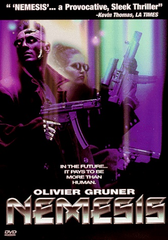

Movie review by : SFAM
Year : 1992
Directed by : Albert Pyun
Written by : Rebecca Charles
Degree of Cyberpunk visuals : Medium
Correlation to Cyberpunk themes : Medium
Rating : 5/10
Key cast members :

~86.5% is still human~
Overview: Surprise surprise - another movie with Gruner playing a cyborg - this time by Martial Arts cyborg master, Albert Pyun. Like Gruner's performance in Automatic (1994), Nemesis is also a decent "B" cyberpunk flick. In Nemesis, Gruner does his Robocop impersonation while trying to fight bad guys in the year 2027. In a well done style over substance movie, we get a nice underground war between cyborgs and humans. Throw in a good bit of Escape from New York and Blade Runner knock-off visuals and you have yourself an evening of trashy fun! Again, nothing new here, but the action is actually done well enough that you might want to give it a watch if you're hankerin for mindless but fun Robocop knockoffs.